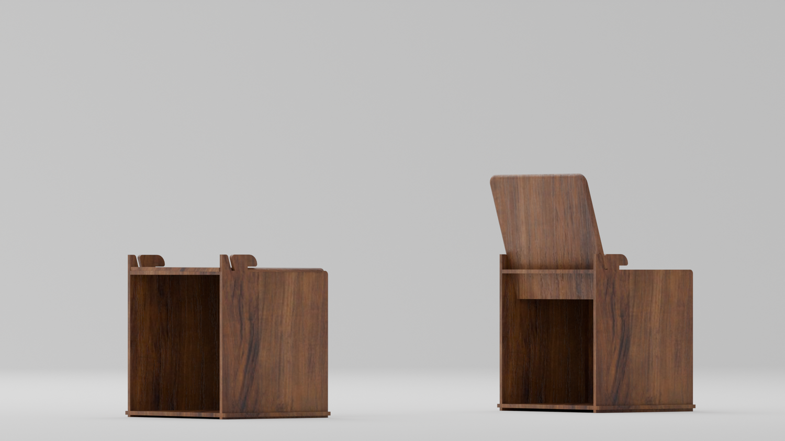
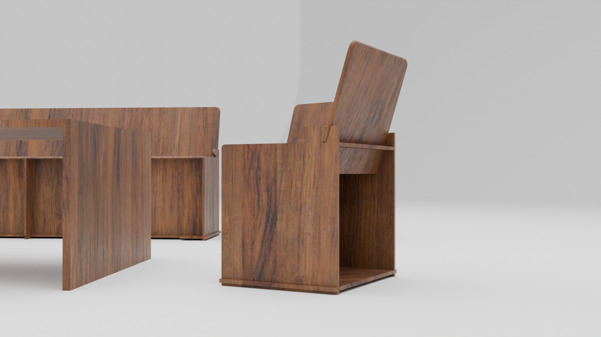
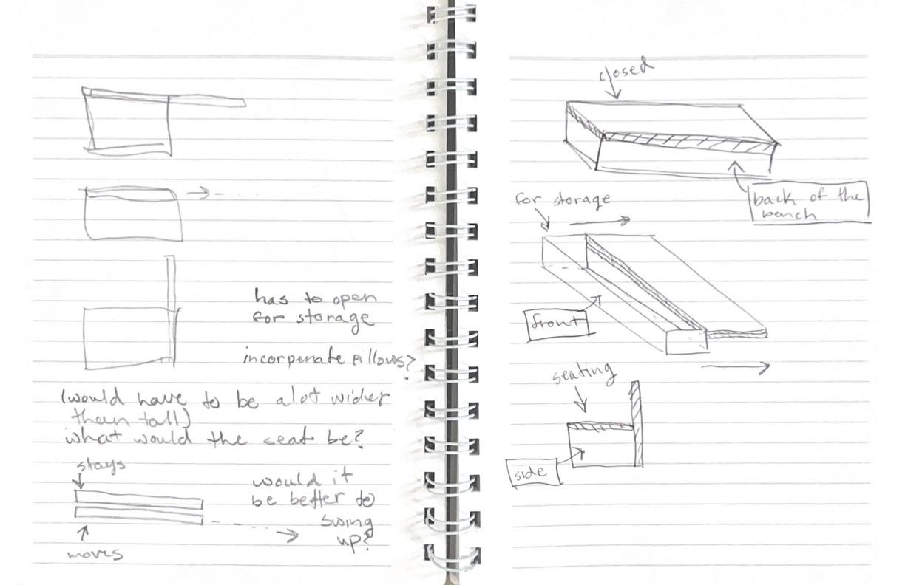
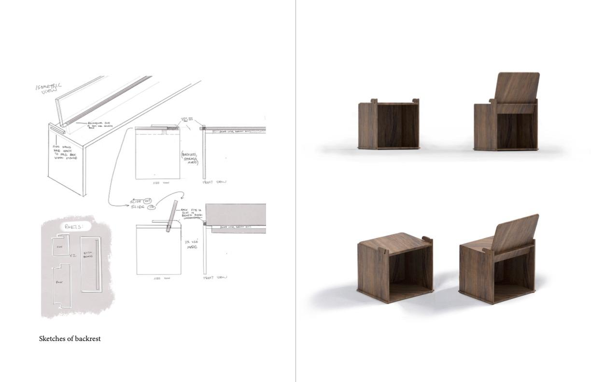

For my undergraduate capstone, I began my project by looking at what tensions arose for people within their homes (specifically in New York apartments). This research led me to see the importance of the transformable element of living rooms, looking both historically and in modern homes and why there are different needs for this singular space. Through my research, I found that New York residents find it difficult to create different spaces within their apartments. Activities such as working, eating and socializing must be combined into one and finding the right furniture to include all of these can be hard when they don’t have much access space within their home.
To solve for this, I co-designed two tables (both dining and coffee) that are able to change function to be able to go from a work space, to a place to eat meals, to an area where people can come together and socialize, all while being spatially conscious. The chairs and benches have reclining backrests that are able to be stored when not in use as well as simultaneously provide storage space.


